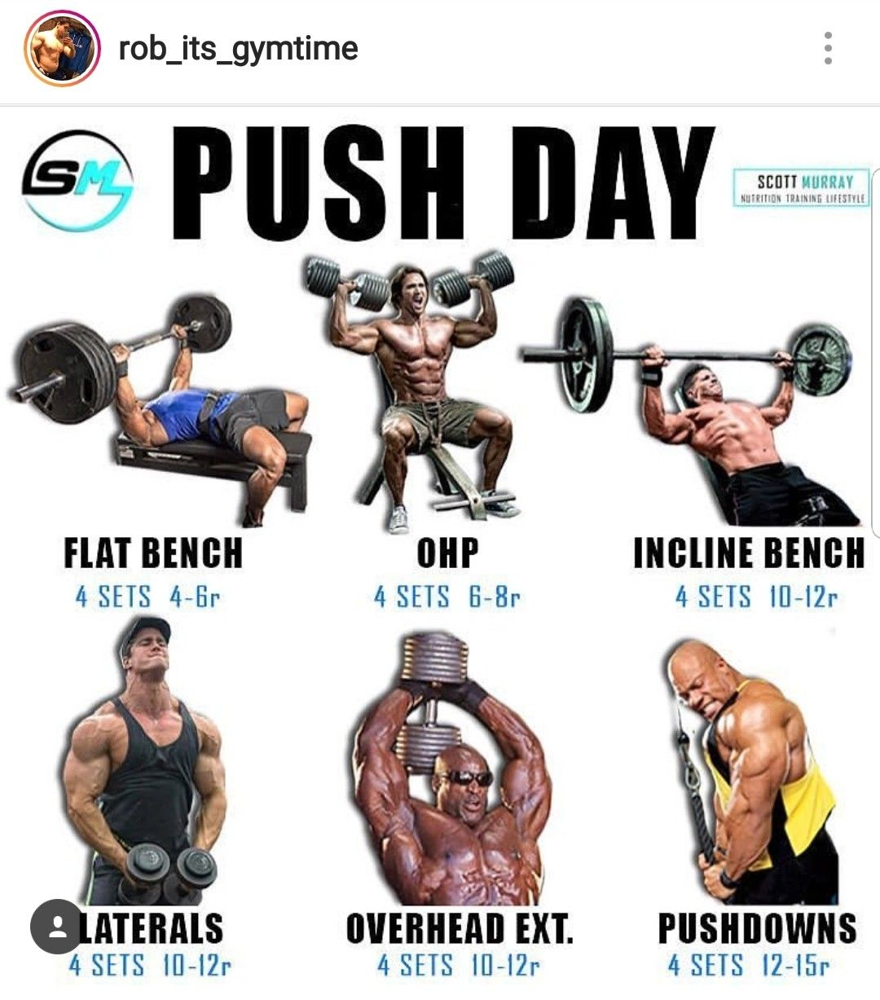
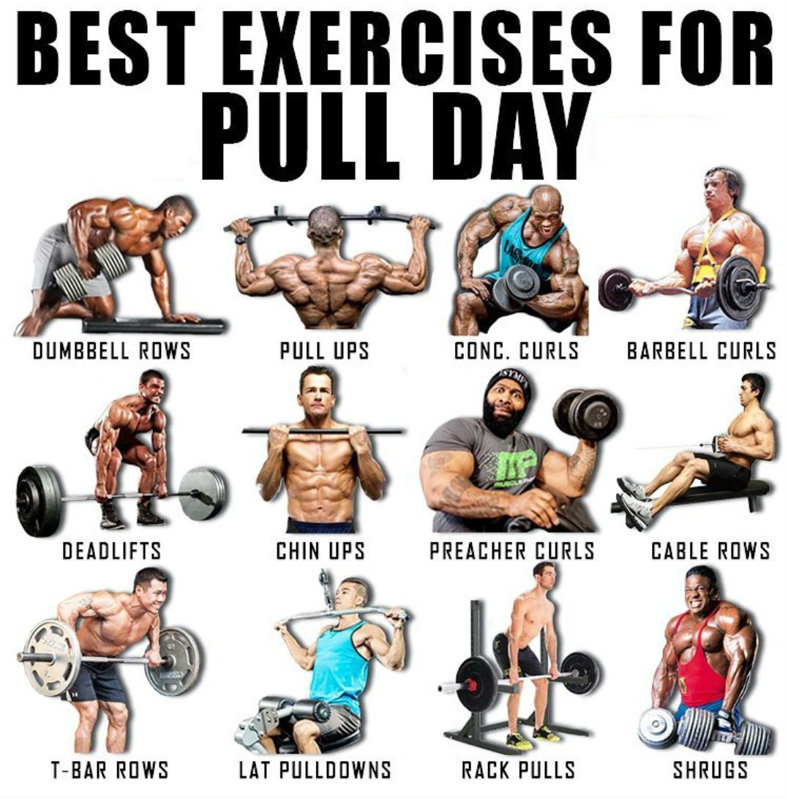

Тренировка за бутане

Дърпане / бутане е уникален метод на тренировка, която се основава на разделяне на вашия тренировъчен план на две, така че в един ден да правите само упражнения с бутане, а на другия такива с дърпане.Този метод е страхотен начин да шокирате системата си, така че да получите по-бързи резултати в изгарянето на мазнини и развиването на мускули.Тренировките за избутване се фокусират върху мускулите, участващи в избутващите движения на горната част на тялото, като основните мускулни групи са гърди, рамене и трицепси.По този начин, тя е подобна на повечето тренировки „гърди и трицепси“, които откривате в други раздели за бодибилдинг.В добре разработена програма вашите избутващи тренировки ще са иградени от изтласкване от лег и полу-лег, кофички, раменни преси с дъмбели или щанга, изтласквания над глава и изолиращи упражнения за трицепс..Този сплит е също така и лесен за разбиране и прилагане, а често най-простото решение е и най-вярното.Бутащи-дърпащи разделя основните ти мускулни групи в две различни тренировки:
Гърди, рамене и трицепси ( бутащи движения)
Гръб и бицепс (дърпащи движения)
Тренировка за дърпане

Вашите тренировки за дърпане се фокусират върху мускулите, участващи в движенията на горната част на тялото при издърпване, като основните са мускулите на гърба, бицепси, трапец и задно рамо.
Следователно, това е наистина просто тренировка за гръб и бицепс.
Тези тренировки обикновено се въртят около мъртва тяга, гребане с щанга и дъмбели, набиране, пулдаун на скрипец, сгъване с щанга и дъмбели за бицепс, вдигане за трапец, задно рамо на машина.Например, когато правите мъртва тяга, мускулите на гърба и бицепсите са отговорни за генерирането на силата, докато гърдите и трицепсите са само за баланс. В друг случай, когато вдигате от лежанка, гърдите и трицепсите са основните мускули в движението, докато вашите „дърпащи“ мускули са на задната седалка.
Ето защо можете да блъскате бицепсите си един ден и нямате проблеми да тренирате трицепсите си на следващия.
По същия начин можете да дърпате без проблем, когато гърдите, раменете или трицепсите ви болят и можете да натискате или тренирате краката си, когато гърбът и бицепсите ви все още се възстановяват.
Въпреки това е хубаво да имате почивен ден след всяка тренировка с цел по-добро възстановяване.
Например ако правите мъртва тяга в деня за гръб реално товарите и краката, така, че не е удачно на следващия ден да имате тренировка за крака.